PORTFOLIO
Pavan Kumar Vaikutherisal
Data Analyst / Business Analyst
I turn operational logs and transactional databases into clear, validated metrics and process recommendations that operations and product teams can act on.
About Me
I am an operational and process analyst with over 3 years of experience in standardizing workflows, tracking SLAs, and building KPI reports at Deloitte and MediaMint. At Deloitte, I led a 28-day Out-of-Balance billing reconciliation project that resolved 1,768 accounts, reduced backlog inventory by 90.5% (from 2,042 to 193), and recovered $567,103 in regional cash flow.
I combine my BBA training in business analytics and ongoing MBA studies in operations management to build clean, reproducible analytics assets. I am committed to logical business framing, rigorous data validation, and honest communication of results.
Skills
SQL
Query writing, Common Table Expressions (CTEs), Window functions (NTILE, LAG), Aggregate analysis, DuckDB.
BI & Visualisation
Power BI dashboards, Tableau charts, Advanced Excel (Pivot Tables, XLOOKUP, standard charts).
Python
Data manipulation (pandas), numpy, scripting, automated runners, custom statistical testing, matplotlib/seaborn.
Data Quality & Governance
Completeness auditing, uniqueness tracking, validity testing, outlier detection (IQR method), schema constraint designs.
Tools
Salesforce CRM, Zendesk Support, JIRA issue tracking, SharePoint version control, SAP FICO module.
Case Studies
CASE STUDY 01
Customer Revenue, Retention, and RFM Analysis
Overall revenue numbers did not show customer quality. Leadership needed to understand which cohorts return and where drop-offs happen.
Calculated monthly growth via SQL CTEs; assigned customers to acquisition cohorts; and scored customer recency, frequency, and monetary value using window NTILE functions.
Segmented the customer base into actionable priority groups (like Champions and At-Risk), revealing specific drop-off points after signup month.
Monthly Revenue & MoM Growth
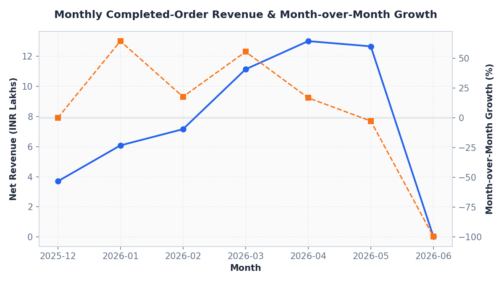
Cohort Retention Heatmap
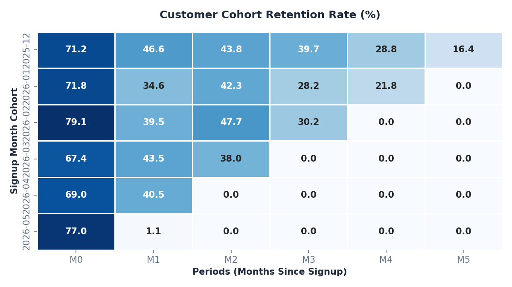
RFM Segment Distribution
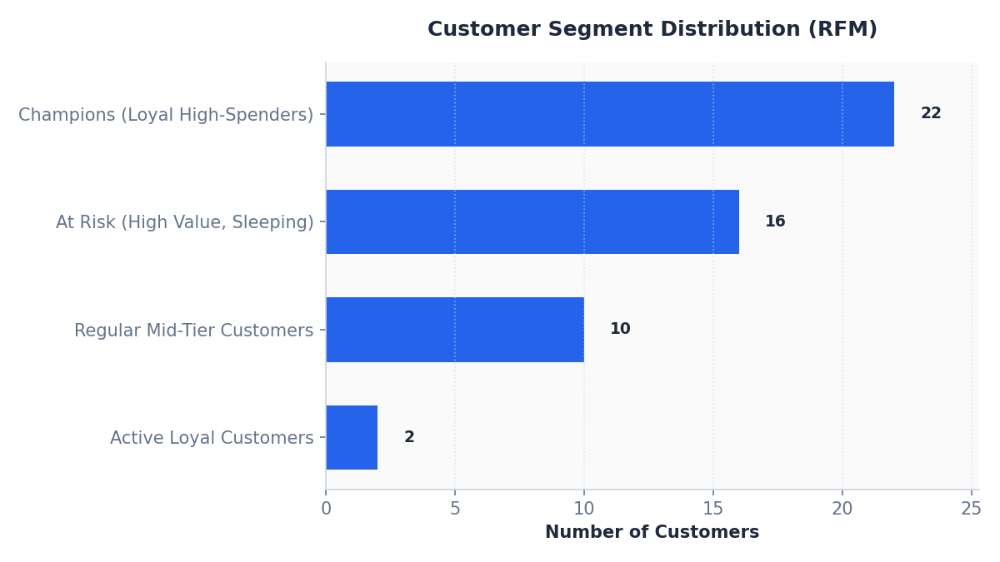
CASE STUDY 02
Operational SLA Bottleneck Analysis
An aggregate support SLA miss did not show which process step was failing or how breaches affected customer satisfaction (CSAT).
Analyzed 1,000 ticket logs; calculated breach rates and average handling times by category; and performed Pareto analysis to find the main driver.
Identified 'Delivery Issue' tickets as the bottleneck (40.7% breach rate) and quantified a 2.54 CSAT rating drop associated with breaches.
SLA Breaches by Category (Pareto)
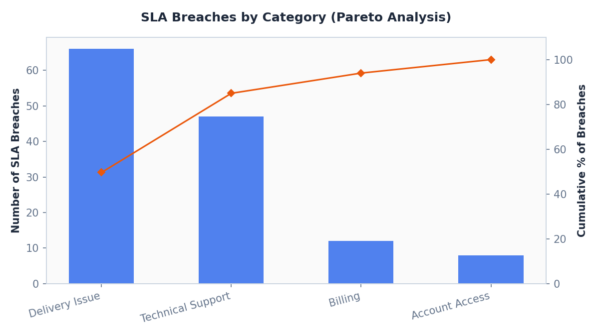
CSAT Comparison: SLA Met vs. Breached
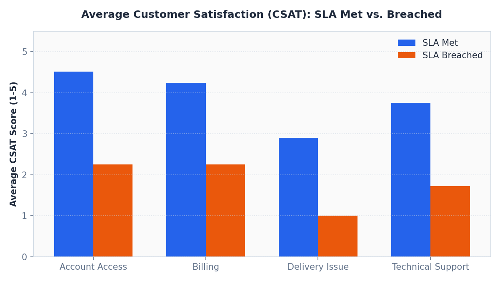
Ticket Volume & SLA Status over Time
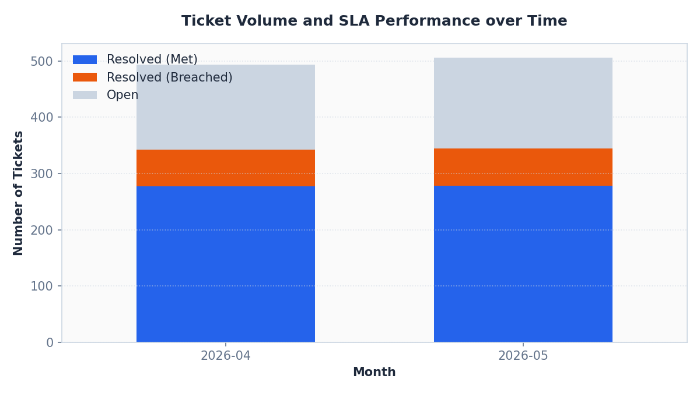
CASE STUDY 03
Checkout Conversion A/B Test
The product team wanted to deploy a new checkout flow but needed statistical evidence that the conversion lift was not random noise.
Analyzed 5,000 experiment users and built a two-proportion Z-test engine from scratch, computing critical stats and confidence intervals.
Found a statistically significant conversion lift (+2.39% absolute, p = 0.01188), supporting a rollout recommendation with device safeguards.
RELATIVE LIFT
+20.35%
+2.39 percentage points
Conversion Rates with 95% Confidence Intervals
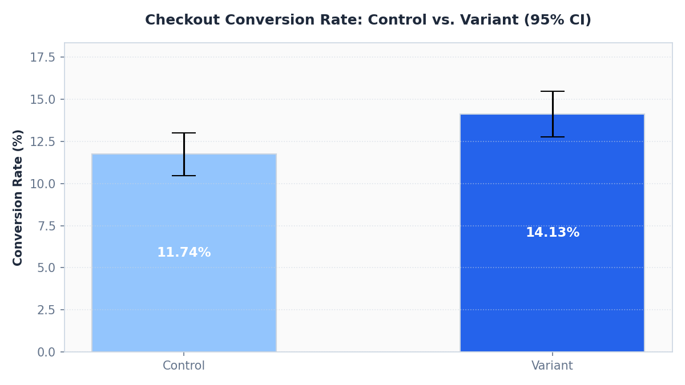
Z-Statistic vs. Rejection Regions
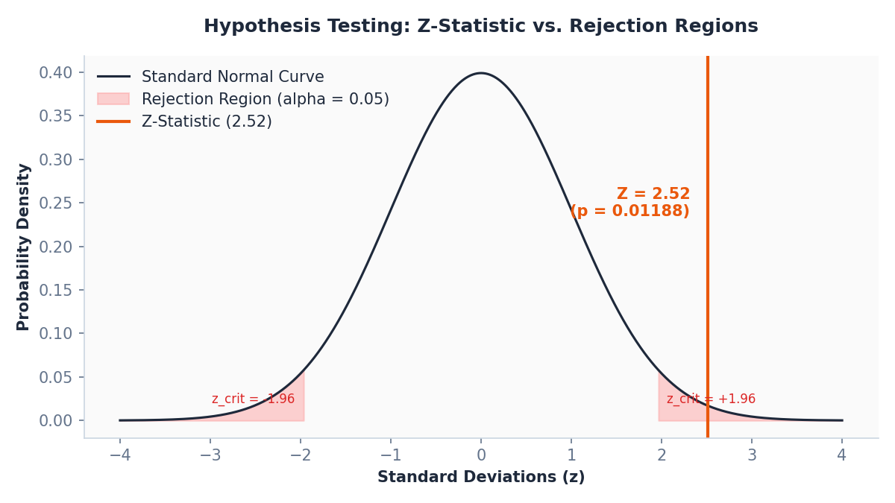
CASE STUDY 04
Data Quality Audit & Profiling
Unreliable records in billing systems eroded report trust. Data validation was needed to discover completeness and formatting errors.
Profiled 1,025 logs across completeness, uniqueness, and validity dimensions; detected transaction outliers; and mapped anomalies.
Quantified anomalies (42 missing emails, 25 duplicate rows, 74 payment casing errors) and built a database-integrity control blueprint.
Data Quality Profile Heatmap
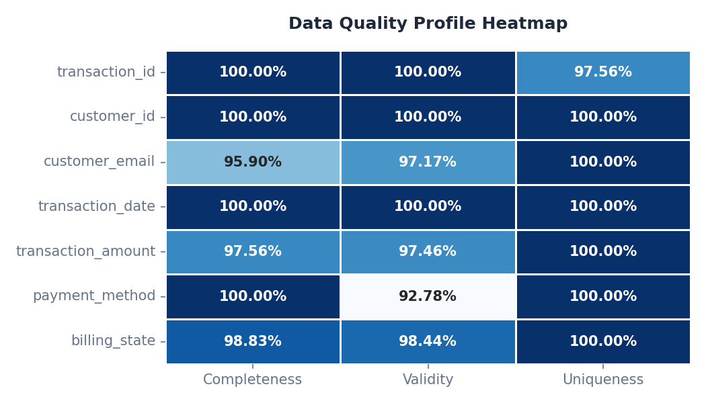
Data Issues Stacked Bar
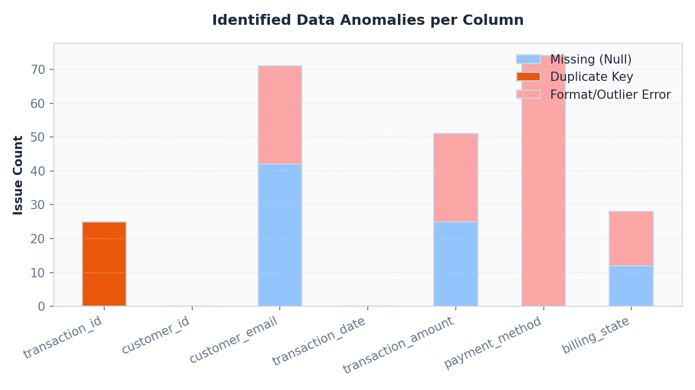
Data Issues Donut Chart
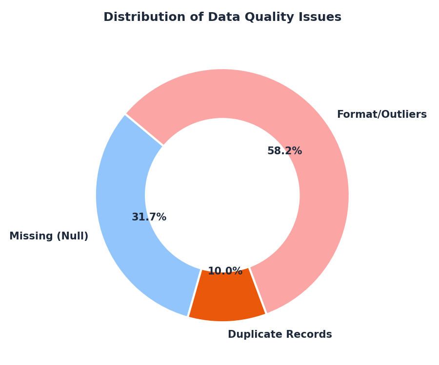
Contact
Feel free to reach out via email or connect with me on LinkedIn and GitHub.
- Email: pavan55vkumar@gmail.com
- LinkedIn: LinkedIn Profile
- GitHub: GitHub Profile